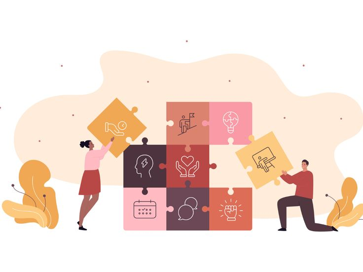
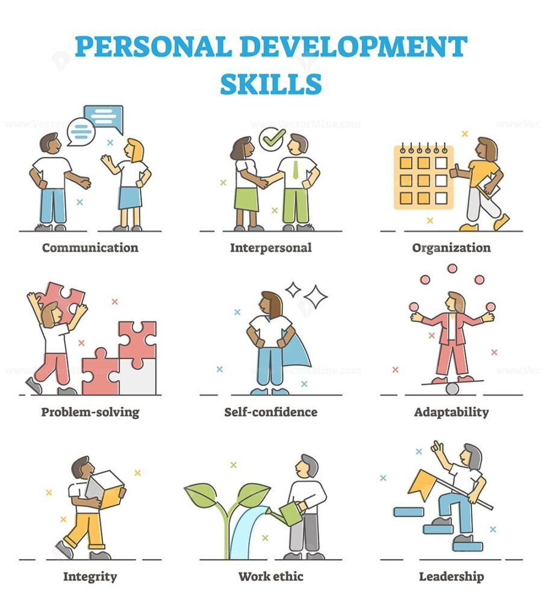

PROFESSIONAL SKILLS / SESSION 06
Introduction to Employability Skills
Developing the skills and attitudes needed for employment.

Overview
Developing the skills and attitudes needed for employment.
Learning outcomes
- Recognize essential employability skills.
- Understand the importance of responsibility and adaptability.
- Value interpersonal skills alongside technical knowledge.
Activities
Communication, teamwork, responsibility, adaptability, and professional attitudes.
My reflection
This session focused on essential skills required for employment, including communication, teamwork, responsibility, adaptability, and professional attitudes. I learned that technical knowledge alone is not enough and that good values, character, and interpersonal skills are equally important for career success.

